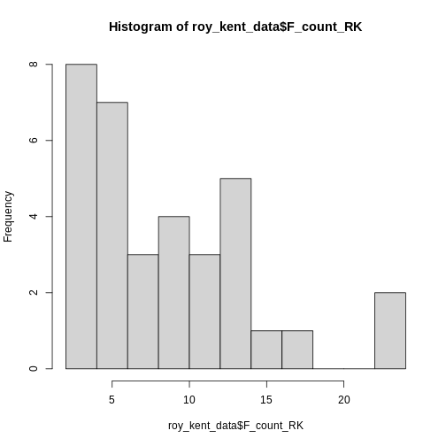

Data Visualization (1)
Last updated on 2025-03-28 | Edit this page
Overview
Questions
- How can you get an overview of data?
- How do you visualize distributions of data?
Objectives
- Learn how to read in
.csvfiles - Learn how to explore a dataset for the first time
- Learn how to visualize key statistics of data
Reading in data
You already had to read in data in the last lesson. Data comes in
many shapes and sizes. The format of data you had to read in the last
session is called csv, for comma-separated values.
This is one of the most common data formats. It gets its name because
all values are separated from each other using a comma “,”. Here in
Germany, csv files are sometimes separated by a semicolon
“;” instead. This can be adjusted in R-code by using
read.csv("path/to/file", sep = ";") and declaring the
semicolon as the separating variable.
Reading data requires specific functions
There are several other common formats including .xlsx
for excel files, .sav for SPSS files, .txt for
simple text files and .rdata for a special R-specific data
format. These files can not be read in by read.csv(), as
this is only for .csv files. Instead, use specific
functions for each format like readxl::read_excel(), or
haven::read_sav().
Let’s again read in the data about Roy Kent’s potty-mouth.
R
roy_kent_data <- read.csv("data/roy_kent_f_count.csv")
Getting a glimpse of the data
When starting out with some data you received, it is important to familiarize yourself with the basics of this data first. What columns does it have, what information is contained in each row? What do the columns mean?
One option to get a quick overview of the data is… just looking at
it! By clicking on the data in the Environment tab or typing
View(roy_kent_data) in the console, you can inspect the
data in R Studio. This will already show you how many observations (in
this case rows) and variables (columns) the data has. We can also
inspect the column names and see the first few entries. Look at the
data, what might each column represent?
Now, let’s go back to using programming to inspect data. We already
learned about the handy function glimpse(), for which we
need the dplyr package.
R
library(dplyr)
glimpse(roy_kent_data)
OUTPUT
Rows: 34
Columns: 16
$ Character <chr> "Roy Kent", "Roy Kent", "Roy Kent", "Roy Kent", "Roy…
$ Episode_order <int> 1, 2, 3, 4, 5, 6, 7, 8, 9, 10, 11, 12, 13, 14, 15, 1…
$ Season <int> 1, 1, 1, 1, 1, 1, 1, 1, 1, 1, 2, 2, 2, 2, 2, 2, 2, 2…
$ Episode <int> 1, 2, 3, 4, 5, 6, 7, 8, 9, 10, 1, 2, 3, 4, 5, 6, 7, …
$ Season_Episode <chr> "S1_e1", "S1_e2", "S1_e3", "S1_e4", "S1_e5", "S1_e6"…
$ F_count_RK <int> 2, 2, 7, 8, 4, 2, 5, 7, 14, 5, 11, 10, 2, 2, 23, 12,…
$ F_count_total <int> 13, 8, 13, 17, 13, 9, 15, 18, 22, 22, 16, 22, 8, 6, …
$ cum_rk_season <int> 2, 4, 11, 19, 23, 25, 30, 37, 51, 56, 11, 21, 23, 25…
$ cum_total_season <int> 13, 21, 34, 51, 64, 73, 88, 106, 128, 150, 16, 38, 4…
$ cum_rk_overall <int> 2, 4, 11, 19, 23, 25, 30, 37, 51, 56, 67, 77, 79, 81…
$ cum_total_overall <int> 13, 21, 34, 51, 64, 73, 88, 106, 128, 150, 166, 188,…
$ F_score <dbl> 0.1538462, 0.2500000, 0.5384615, 0.4705882, 0.307692…
$ F_perc <dbl> 15.4, 25.0, 53.8, 47.1, 30.8, 22.2, 33.3, 38.9, 63.6…
$ Dating_flag <chr> "No", "No", "No", "No", "No", "No", "No", "Yes", "Ye…
$ Coaching_flag <chr> "No", "No", "No", "No", "No", "No", "No", "No", "No"…
$ Imdb_rating <dbl> 7.8, 8.1, 8.5, 8.2, 8.9, 8.5, 9.0, 8.7, 8.6, 9.1, 7.…This will tell us the variable type of each column, too. We can see that the first column is a character column which just contains the name of the hero of this data Roy Kent. The second column is an integer (so whole numbers) vector with information about the episode number.
Next, let’s try to figure out what each of the column names mean and
what type of information is stored here. Some columns are
self-explanatory like Season or Episode.
Others might require a bit of background knowledge like
Imdb_rating, which requires you to know about the
film-rating platform “Imdb”.
Some columns are riddled with abbreviations that make their names
easier to write, but harder to understand. F_count_RK is
using RK as an abbreviation of Roy Kent and F as an abbreviation for…
something else. cum_rk_overall is a cumulative (running)
total of the number of times Roy used the F-word.
Yet other columns are really difficult to understand, because the
implication is not 100% clear. What does F_count_total
mean? The number of times “Fuck” was said in an episode? Seems like a
reasonable guess, but in order to be sure, it’s best if we had some
documentation of the data’s author’s intentions. This is often called a
codebook, where the person compiling data writes down
information about the meaning of column names, cleaning procedures and
other oddities of the data. When sharing your own data online, this is
essential in order to make your data useable for others.
There is no codebook included in this workshop, but you can find it online. The data is taken from an event called “Tidy-Tuesday”, a weekly event about cleaning and presenting interesting data using R. You can find information about the Roy Kent data here. Give it a read in order to make sure you know what all the columns are about.
Inspecting important values
Now that we understand the structure of the data and the names of the
columns, we can start getting a look at the data itself. A good way to
get an overview of data with loads of numeric variables is
psych::describe(). This outputs you some basic descriptive
statistics of the data.
R
psych::describe(roy_kent_data) # describe() function from psych package
OUTPUT
vars n mean sd median trimmed mad min max
Character* 1 34 1.00 0.00 1.00 1.00 0.00 1.00 1.00
Episode_order 2 34 17.50 9.96 17.50 17.50 12.60 1.00 34.00
Season 3 34 2.06 0.81 2.00 2.07 1.48 1.00 3.00
Episode 4 34 6.21 3.37 6.00 6.18 4.45 1.00 12.00
Season_Episode* 5 34 17.50 9.96 17.50 17.50 12.60 1.00 34.00
F_count_RK 6 34 8.82 5.63 7.50 8.25 5.19 2.00 23.00
F_count_total 7 34 21.82 11.53 18.00 20.86 8.15 6.00 46.00
cum_rk_season 8 34 53.79 37.29 50.00 51.36 40.77 2.00 138.00
cum_total_season 9 34 126.32 93.71 110.50 115.79 88.96 13.00 377.00
cum_rk_overall 10 34 130.74 92.69 124.50 127.25 118.61 2.00 300.00
cum_total_overall 11 34 308.09 215.14 275.50 296.61 246.11 13.00 742.00
F_score 12 34 0.40 0.15 0.36 0.38 0.15 0.15 0.72
F_perc 13 34 39.57 15.02 35.70 38.49 15.20 15.40 71.90
Dating_flag* 14 34 1.44 0.50 1.00 1.43 0.00 1.00 2.00
Coaching_flag* 15 34 1.59 0.50 2.00 1.61 0.00 1.00 2.00
Imdb_rating 16 34 8.33 0.66 8.50 8.39 0.59 6.60 9.40
range skew kurtosis se
Character* 0.00 NaN NaN 0.00
Episode_order 33.00 0.00 -1.31 1.71
Season 2.00 -0.10 -1.53 0.14
Episode 11.00 0.06 -1.26 0.58
Season_Episode* 33.00 0.00 -1.31 1.71
F_count_RK 21.00 0.79 0.05 0.97
F_count_total 40.00 0.78 -0.58 1.98
cum_rk_season 136.00 0.48 -0.82 6.39
cum_total_season 364.00 0.93 0.16 16.07
cum_rk_overall 298.00 0.28 -1.27 15.90
cum_total_overall 729.00 0.42 -1.06 36.90
F_score 0.56 0.60 -0.74 0.03
F_perc 56.50 0.60 -0.74 2.58
Dating_flag* 1.00 0.23 -2.01 0.09
Coaching_flag* 1.00 -0.34 -1.94 0.09
Imdb_rating 2.80 -0.81 0.31 0.11In my opinion, the most important information in this table are the mean value of a column and the maximum and minimum value. The mean value reveals some important information about the average value of a given variable, duh… And the minimum and maximum value can reveal issues in the data. Is the minimum age -2? Or the maximum IQ 1076? Something might be wrong in this data, and looking at the minimum and maximum values might already give you a clue. In this data, none of the maxima or minima seem to be a problem, as they are all in reasonable ranges.
Let’s start visualizing some basic information. I have already proclaimed my love for histograms as a quick and dirty tool to get an overview and the simplicity of its code is a reason why!
R
hist(roy_kent_data$F_count_RK) # Recall that the $ operator gets you a variable from a dataframe

Only 5 bars seem to be to few to visualize the distribution adequately, so lets try 10 instead.
R
hist(roy_kent_data$F_count_RK, breaks = 10)
 This already provides us some more useful information. Roy seems to swear between 0 and 12 times most often and swears a lot in two episodes.
Let’s try increasing the number of breaks to 20.
R
hist(roy_kent_data$F_count_RK, breaks = 20)

Here, an interesting pattern seems to emerge. Three different
clusters of swear counts show up, one where Roy swears between 0 - 7
times, presumably because he has little screen-time in the episode. One
cluster where Roy swears between 9-17 times, which more closely
resembles his average swearing amount. And finally two episodes where
Roy flies of the handle and swears a whopping
max(roy_kent_data$F_count_RK) = 23 times!
In order to figure out what makes Roy swear so much, let’s plot the number of times Roy swears by episode!
ggplot2
For most of our plotting needs (except the beautiful
hist()), we will make use of the package
ggplot2 which is part of the larger collection of packages
tidyverse and provides some really useful plotting
functions. Most importantly, ggplot provides a useful grammar
of plotting functions that always follow the same format.
You start out with the function ggplot() and give it our
data, simple enough. Here, we start working with the entire dataframe,
not just vectors. We can simply pass it into ggplot() and
later on declare which variables we want to use.
R
ggplot(data = roy_kent_data)
ERROR
Error in ggplot(data = roy_kent_data): could not find function "ggplot"Oops, R tells us that it cannot find this function. Most of the time, this is because you forgot to load the package beforehand. Let’s try again:
R
library(ggplot2)
ggplot(data = roy_kent_data)

Now it works, but not really. For now, this code only tells the function which data we are using, not what to do with it.
In order to actually see a plot, we need to provide information about
the visual properties, the aesthetics that the plot should
have. The mapping argument tells the function how the data
relates to the visual properties of the plot. We define this mapping
using the function aes(). Here, we declare the columns that
we want on the x-axis and y-axis.
R
ggplot(
data = roy_kent_data,
mapping = aes(x = Episode_order, y = F_count_RK)
)

While we cannot see anything useful yet, we already notice some changes. The plot now correctly shows the names of the variables on the axes. Also, the ranges of numbers printed on the axes matches the minimum and maximum values.
Now that we provided the data and the mapping of variables to the
plot, we can start building our proper visualization. This is done
on top of the basics declared in ggplot(). This
technique is called layering and it allows you to combine
multiple new changes to a plot easily using a simple +. To
add a plot showing the number of Fucks given by Roy during an episode,
we can use geom_point().
R
ggplot(
data = roy_kent_data,
mapping = aes(x = Episode_order, y = F_count_RK)
) +
geom_point()

geom_point() adds a simple scatter-plot element to the
graph.
We can change the labels to make the graph more polished using
labs().
R
ggplot(
data = roy_kent_data,
mapping = aes(x = Episode_order, y = F_count_RK)
) +
geom_point()+
labs(
title = "# of F*cks said by Roy Kent",
x = "Episode Number",
y = "# of F*cks"
)
There seems to be a small trend showing that Roy swears more later in
the series. We can visualize this trend by adding another layered visual
geom_smooth().
R
ggplot(
data = roy_kent_data,
mapping = aes(x = Episode_order, y = F_count_RK)
) +
geom_point()+
labs(
title = "# of F*cks said by Roy Kent",
x = "Episode Number",
y = "# of F*cks"
)+
geom_smooth(
method = "lm", # this forces the trend-line to be linear
se = FALSE
)
OUTPUT
`geom_smooth()` using formula = 'y ~ x'
What might be causing this trend? Well, one possible candidate is
that Roy goes from being a player on the team to being a coach on the
team. This might cause him to yell at more people than usual. The
variable that contains this information is Coaching_flag.
Let’s learn something about it:
R
table(roy_kent_data$Coaching_flag)
OUTPUT
No Yes
14 20 It seems to have two values “Yes” and “No”, each being represented in the data more than 10 times.
We can also add this to our visualization from earlier, coloring in
the dots by whether Roy was coaching or not. In order to do this, we
need to add the color variable in the aesthetics mapping in
the ggplot() function.
R
ggplot(
data = roy_kent_data,
mapping = aes(x = Episode_order, y = F_count_RK, color = Coaching_flag)
) +
geom_point()+
labs(
title = "# of F*cks said by Roy Kent",
x = "Episode Number",
y = "# of F*cks"
)+
geom_smooth(
method = "lm", # this forces the trend-line to be linear
se = FALSE
)
OUTPUT
`geom_smooth()` using formula = 'y ~ x'
Now, a clearer picture emerges. Roy starts of pretty slow as a player, but then begins to swear a lot in the episodes that he is coaching in.
Making plots prettier using themes
The basic plots already look okay and are enough for just finding something out about data. But you can make them even more enticing by using a theme. Themes in ggplot are collections of visual settings that control the background of the plot, the text size of the axis and some other things.
I often use theme_classic() or
theme_minimal(), but you can try out different themes or
even write your own!
R
ggplot(
data = roy_kent_data,
mapping = aes(x = Episode_order, y = F_count_RK, color = Coaching_flag)
) +
geom_point()+
labs(
title = "# of F*cks said by Roy Kent",
x = "Episode Number",
y = "# of F*cks"
)+
geom_smooth(
method = "lm", # this forces the trend-line to be linear
se = FALSE
)+
theme_minimal()
OUTPUT
`geom_smooth()` using formula = 'y ~ x'
Challenges
Challenge 1
Figure out what information is stored in the column
F_count_total. Compute the descriptive information (mean,
standard deviation, minimum and maximum) for this variable.
Challenge 2
Compare the descriptive information to those for
F_count_RK. Which one is bigger, why?
Compute the difference between the two variables. What does it
represent. Compare the difference to F_count_RK. Which has
the higher average value?
R
f_count_others <- roy_kent_data$F_count_total - roy_kent_data$F_count_RK
mean(f_count_others)
OUTPUT
[1] 13R
mean(roy_kent_data$F_count_RK)
OUTPUT
[1] 8.823529Challenge 3
Plot a histogram of F_count_total. Try different values
of breaks, which seems most interesting to you?
Challenge 4
Visualize the relationship between the amount of time Roy Kent said
“Fuck” and the Imdb rating of that episode using
geom_point().
R
ggplot(
data = roy_kent_data,
mapping = aes(x = F_count_RK, y = Imdb_rating)
)+
geom_point()+
labs(
title = "Relationship between F-count and episode rating",
x = "# of F*cks",
y = "Imdb Rating"
)+
theme_minimal()
Challenge 5
Be creative! What else can you notice in the data? Try to make an interesting plot.
Key Points
- Get an overview of the data by inspecting it or using
glimpse()/describe() - Consult a codebook for more in-depth descriptions of the variables in the data
- Visualize the distribution of a variable using
hist() - Use
ggplot(data = data, mapping = aes())to provide the data and mapping to the plots - Add visualization steps like
geom_point()orgeom_smooth()using+